Escuela de Oficios
Aprender, diseñar y construir desde el territorio
La Escuela de Oficios en Madera es un espacio de formación y experimentación creado por el Colectivo de Madereros de Tortel. Nace de los conocimientos vinculados a la madera que forman parte de la historia de nuestro territorio y los pone en diálogo con el diseño, la creatividad y nuevas formas de hacer.
A través de experiencias prácticas y cercanas, buscamos que más personas puedan aprender un oficio, conocer los materiales y las herramientas, desarrollar sus propias ideas y adquirir la autonomía necesaria para llevarlas a cabo.
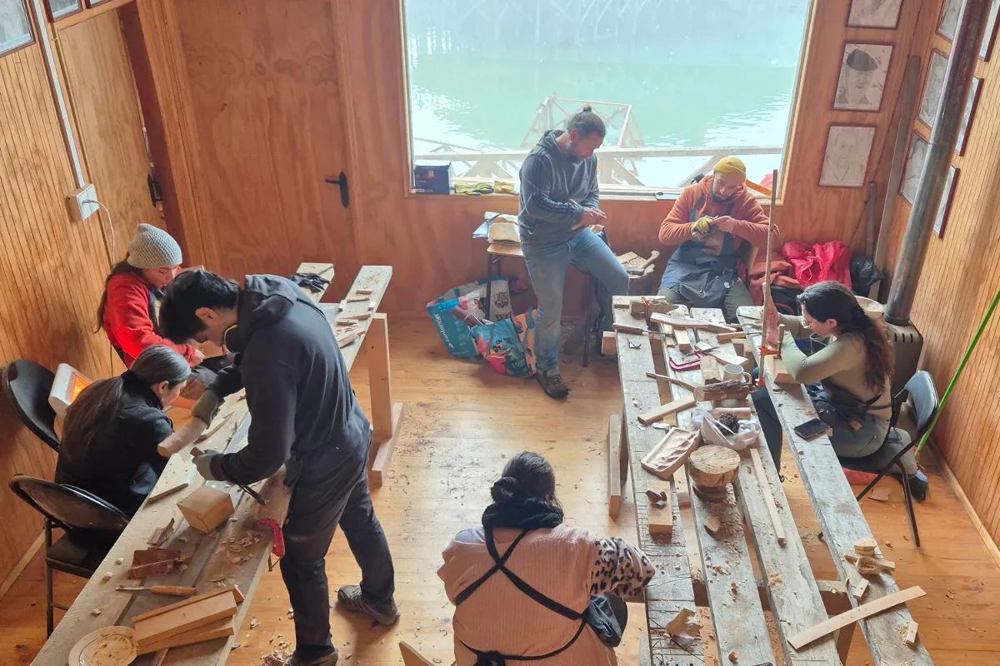
Nuestra forma de aprender
En la Escuela de Oficios aprendemos haciendo. Cada experiencia combina conocimientos técnicos, uso de herramientas, diseño y creatividad para que las y los participantes puedan desarrollar sus propias ideas y construir objetos vinculados a sus necesidades.
Trabajamos desde los saberes presentes en el territorio y la experiencia de quienes han aprendido los oficios a través de la práctica y la transmisión entre generaciones. Al mismo tiempo, incorporamos herramientas provenientes del diseño, las artes y otros campos que permiten experimentar y ampliar las posibilidades del trabajo en madera.
pensar con las manos
Comprender materiales, herramientas y procesos a través de la práctica.
diseñar
Imaginar, proyectar y tomar decisiones sobre aquello que queremos construir.
experimentar
Probar técnicas, materiales y soluciones para ampliar las posibilidades del oficio.
compartir saberes
Poner en diálogo conocimientos, experiencias y aprendizajes entre generaciones.
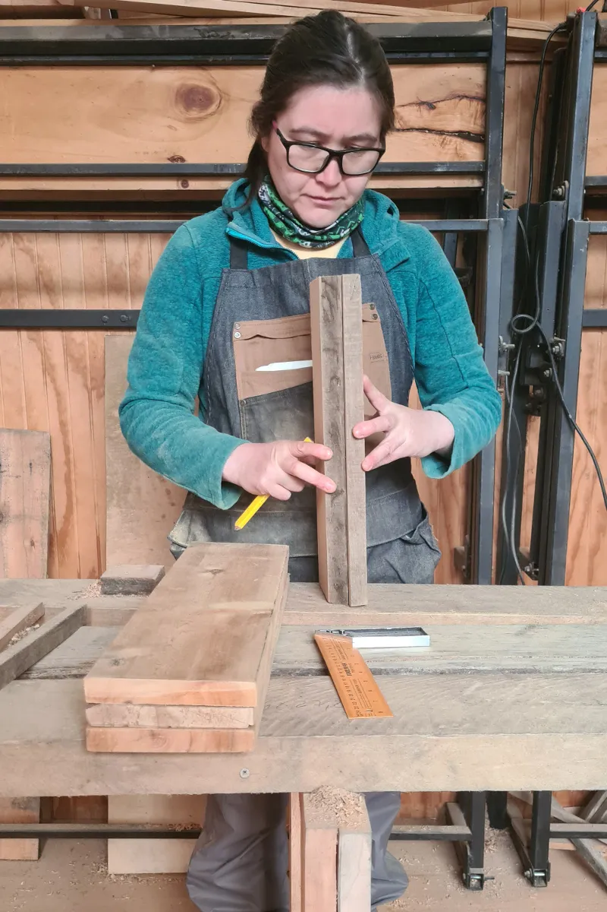
Oficios y aprendizajes
La Escuela aborda distintas formas de trabajar y crear con madera, desde saberes tradicionales hasta prácticas contemporáneas. Mueblería, tallado, carpintería, diseño y experimentación se articulan en experiencias formativas que permiten conocer técnicas y materiales, desarrollar habilidades y explorar nuevas posibilidades del oficio.
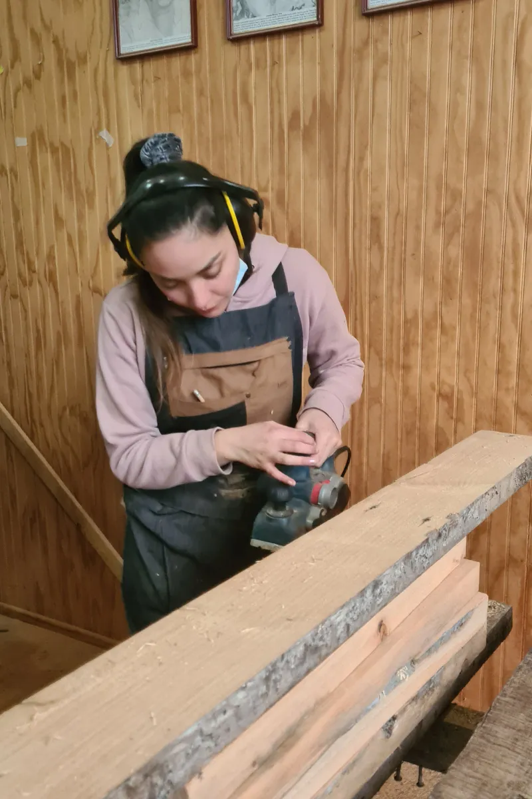
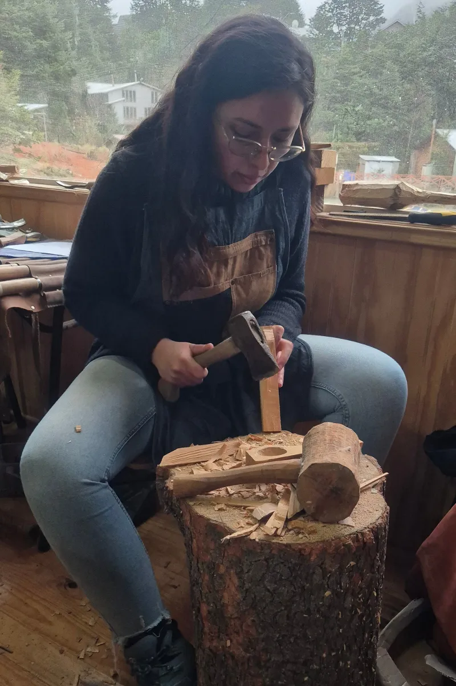
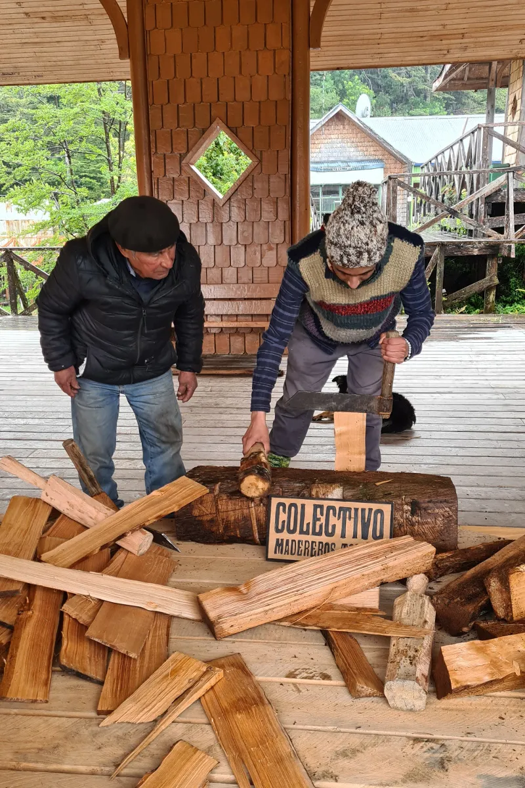
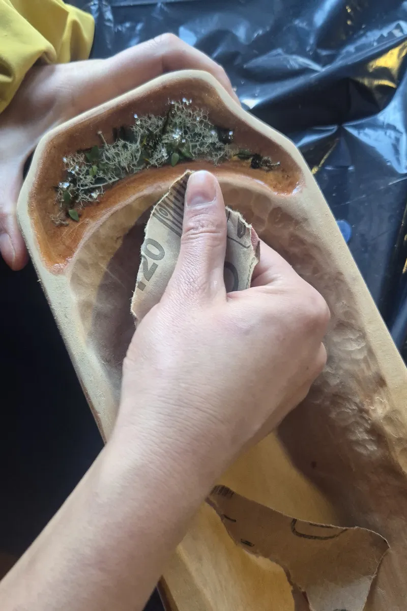
La Escuela por ciclos
Cada ciclo de la Escuela recoge los aprendizajes de las experiencias anteriores para ampliar territorios, incorporar nuevos públicos y explorar otras formas de trabajar con la madera. Así, la Escuela se construye como un proyecto en permanente desarrollo, conectado con las personas y comunidades que participan en ella.La Escuela por ciclos.
Ciclo I
Tortel · Puerto Río Tranquilo · Puerto Ingeniero Ibáñez
La primera versión de la Escuela reunió a 35 participantes en tres localidades de la Región de Aysén. El ciclo incluye experiencias de mueblería básica, tallado, resina y construcción de un yerbero de madera, combinando el aprendizaje de técnicas y herramientas con el diseño y la creatividad.
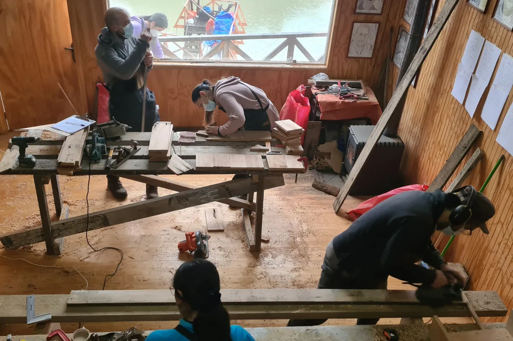
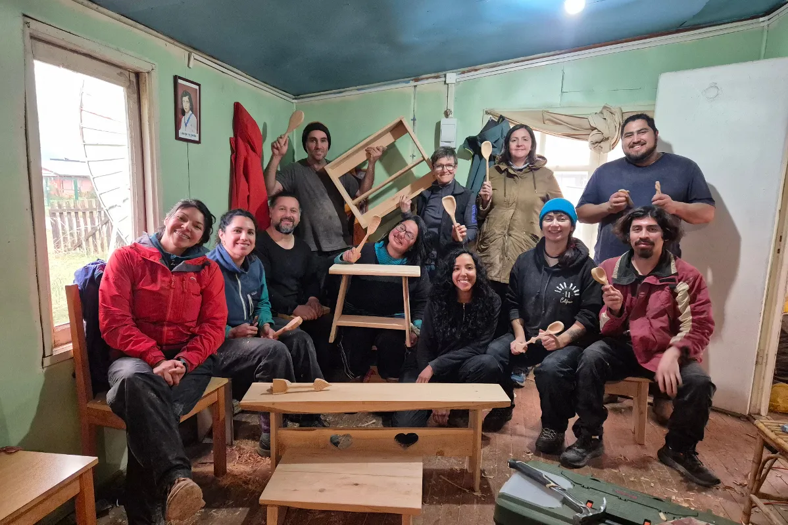
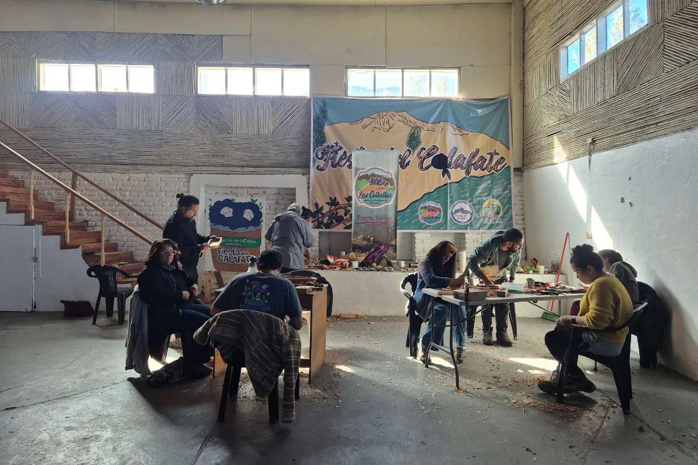
Ciclo II
Tortel · Cochrane · Villa O’Higgins
La segunda versión profundiza el modelo de la Escuela con nuevos niveles de formación y propuestas para distintas edades. El ciclo incorpora mueblería, tallado y creación de autómatas de madera para niñas, niños y adolescentes, y amplía las experiencias formativas hacia Cochrane y Villa O’Higgins.
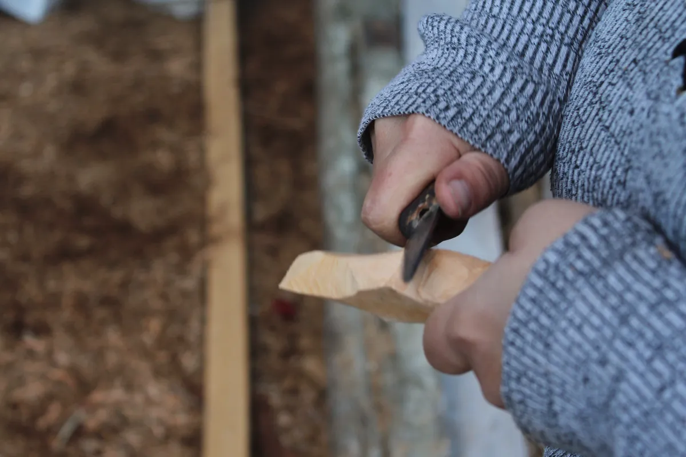
Una escuela que se mueve por Aysén
La Escuela nace en Tortel, pero busca que los oficios y conocimientos vinculados a la madera circulen por distintos territorios de la Región de Aysén. Cada nuevo ciclo genera espacios de encuentro e intercambio entre comunidades, ampliando el acceso a experiencias formativas y creando redes en torno al hacer, la creatividad y los saberes locales.
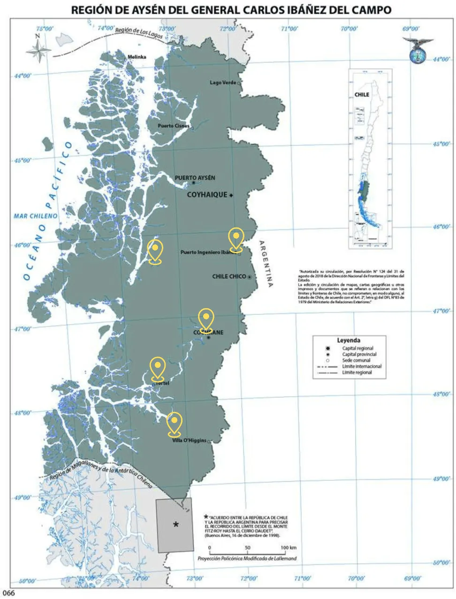
Voces de la Escuela
¿Qué ocurre cuando aprendemos a diseñar y construir con nuestras propias manos? Las experiencias de quienes participan en la Escuela permiten conocer los aprendizajes, desafíos y nuevas posibilidades que aparecen durante cada proceso.